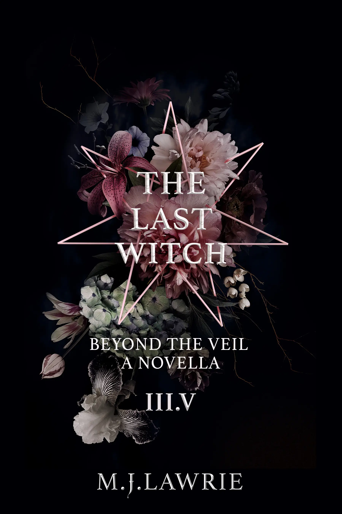

LAST WITCH
BOOK I

FREEDOM AND LOVE HAVE NEVER BEEN SO DEADLY.
My ex-lover is a psychopath, hunting me down for revenge. I am falling in love with his enemy. And I am the last Arcane Witch left alive, destined to return magic to the modern world.
My whole life, I have been a prisoner. Starved. Beaten. Hated. By my own family! But most of all, I am feared. I am feared because I am the most powerful woman in the world. Most want me dead. Some want to control my magic for their own, dark desires.
To others, I am salvation. A key to winning a war that has raged for five-hundred years between those who can use magic, and hunters, who dedicate their entire existence to killing anyone with magic in their blood.
I am released from my chains, and thrown into a world I am supposed to save. A world that has made me suffer beyond words.
Magic must return. But should it?
LAST WITCH
BOOK II

How much can one person go through until they break?
The chains around Lilly's wrists are gone. The doors once locking her in, unbolted. But Lilly Hooper is as far from free as could be.
Her magic has been stolen, and her power and freedom are held ransom by her coven leader. Grayson's obsession with furthering the Arcane bloodline, and his unrelenting desire to complete a dangerous spell, returning magic to the world, has consumed him. He is ready to destroy anyone who gets in his way. His brother, his coven, even Lilly Hooper herself. No one is safe.
In the shadows, Lilly's enemies are closing in. Toby is far from finished with his obsession to regain his control over her mind, body, soul and magic.
Hunters are gathering. And Lilly's past returns to haunt her far more than any nightmare ever could.
When the missing six weeks of her memory reveal a heartbreaking truth, everything changes. And not even Gabriel may be able to stop her from seeking the revenge she so desperately craves.
LAST WITCH
BOOK III

After the turbulent and heart breaking events of Lilly and Gabriel's almost wedding, nothing will ever be the same.
The world has been thrown into violent chaos. Hunters have declared all out war on thosewith magic in their blood and everyone has been caught in the crossfire. But Hunters, it would seem, are far from the world's biggest threat. A dark evil has been unleashed. One driven by wrath and an insatiable hunger for vengeance. And the fate of the world and all those in it rest in a single pair of hands.
The final spell has begun. The end draws near. And Lilly Hooper's fate has been sealed.
Volume three brings the gripping, dark and intense Last Witch trilogy to its climax.
Get ready. This is no fairy tale.
LAST WITCH
BOOK IV NOVELLA

Free Chapter
After the turbulent and heart breaking events of Lilly and Gabriel's almost wedding, nothing will ever be the same.
The world has been thrown into violent chaos. Hunters have declared all out war on thosewith magic in their blood and everyone has been caught in the crossfire. But Hunters, it would seem, are far from the world's biggest threat. A dark evil has been unleashed. One driven by wrath and an insatiable hunger for vengeance. And the fate of the world and all those in it rest in a single pair of hands.
The final spell has begun. The end draws near. And Lilly Hooper's fate has been sealed.
Volume three brings the gripping, dark and intense Last Witch trilogy to its climax.
Get ready. This is no fairy tale.